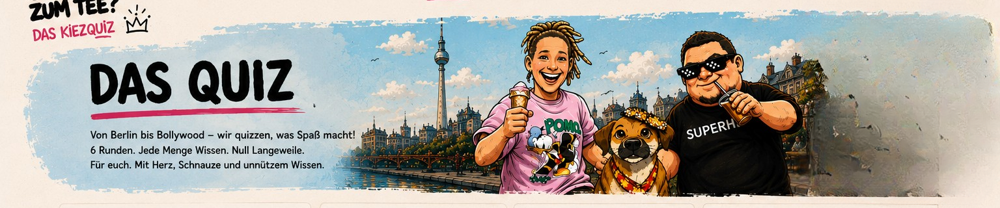
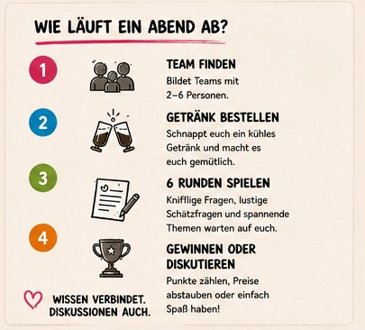
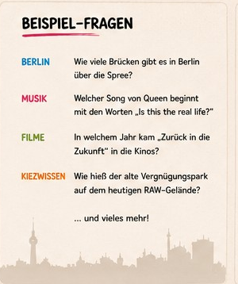
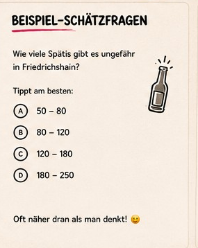
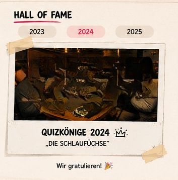
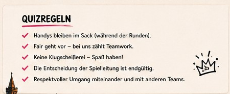
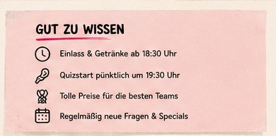
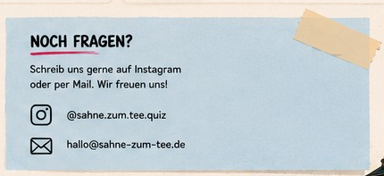

Das Quiz
Von Berlin bis Bollywood — wir quizzen, was Spaß macht!
6 Runden. Jede Menge Wissen. Null Langeweile.
Für euch. Mit Herz, Schnauze und unnützem Wissen.
Wie läuft ein Abend ab?
♥ Wissen verbindet. Diskussionen auch.
Beispiel-Fragen
Wie viele Brücken gibt es in Berlin über der Spree?
Welcher Song von Queen beginnt mit den Worten „Is this the real life?“
In welchem Jahr kam „Zurück in die Zukunft“ in die Kinos?
Wie hieß der alte Vergnügungspark auf dem heutigen RAW-Gelände?
… und vieles mehr!
Beispiel-Schätzfragen
Wie viele Spätis gibt es ungefähr in Friedrichshain? Tippt am besten:
Oft näher dran als man denkt! 🙂
Hall of Fame

Quizregeln
- Handys bleiben im Sack (während der Runden).
- Fair geht vor – bei uns zählt Teamwork.
- Keine Klugscheißerei – Spaß haben!
- Die Entscheidung der Spielleitung ist endgültig.
- Respektvoller Umgang miteinander und mit anderen Teams.
Gut zu wissen
- Einlass & Getränke ab 18:30 Uhr.
- Quizstart pünktlich um 19:30 Uhr.
- Tolle Preise für die besten Teams.
- Regelmäßig neue Fragen & Specials.
Das Quiz
Von Berlin bis Bollywood — wir quizzen, was Spaß macht! 6 Runden. Jede Menge Wissen. Null Langeweile. Für euch. Mit Herz, Schnauze und unnützem Wissen.
Wie läuft ein Abend ab?
- Team finden — Bildet Teams mit 2–6 Personen.
- Getränk bestellen — Schnappt euch ein kühles Getränk und macht es euch gemütlich.
- 6 Runden spielen — Knifflige Fragen, lustige Schätzfragen und spannende Themen warten auf euch.
- Gewinnen oder diskutieren — Punkte zählen, Preise abstauben oder einfach Spaß haben.
Wissen verbindet. Diskussionen auch.
Beispiel-Fragen
- Berlin: Wie viele Brücken gibt es in Berlin über der Spree?
- Musik: Welcher Song von Queen beginnt mit den Worten „Is this the real life?“
- Filme: In welchem Jahr kam „Zurück in die Zukunft“ in die Kinos?
- Kiezwissen: Wie hieß der alte Vergnügungspark auf dem heutigen RAW-Gelände?
… und vieles mehr!
Beispiel-Schätzfragen
Wie viele Spätis gibt es ungefähr in Friedrichshain? Tippt am besten:
- A: 50–80
- B: 80–120
- C: 120–180
- D: 180–250
Oft näher dran als man denkt!
Hall of Fame
2023 · 2024 · 2025 — Quizkönige 2024: „Die Schlaufüchse“ — Wir gratulieren!
Quizregeln
- Handys bleiben im Sack (während der Runden).
- Fair geht vor – bei uns zählt Teamwork.
- Keine Klugscheißerei – Spaß haben!
- Die Entscheidung der Spielleitung ist endgültig.
- Respektvoller Umgang miteinander und mit anderen Teams.
Gut zu wissen
- Einlass & Getränke ab 18:30 Uhr.
- Quizstart pünktlich um 19:30 Uhr.
- Tolle Preise für die besten Teams.
- Regelmäßig neue Fragen & Specials.
Noch Fragen?
Schreibt uns gerne auf Instagram oder per Mail. Wir freuen uns! @sahne.zum.tee.quiz · hallo@sahne-zum-tee.de